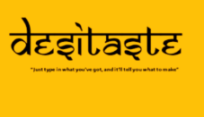

My Portfolio

DESITASTE(just type in what you've got, and it'll tell you what to make)
Curating,organizing and maintaining the platforms's recipe database is my key duty as the content lead for a collective project creating a food recipe app.By incorporating user feedback and researching culinary and food trends, I make sure the material meets user needs. Working collaboratively with team members, i try to improve the app's usability and increase the number of recipes available so users may find dishes that are specific to the items they already have. ...